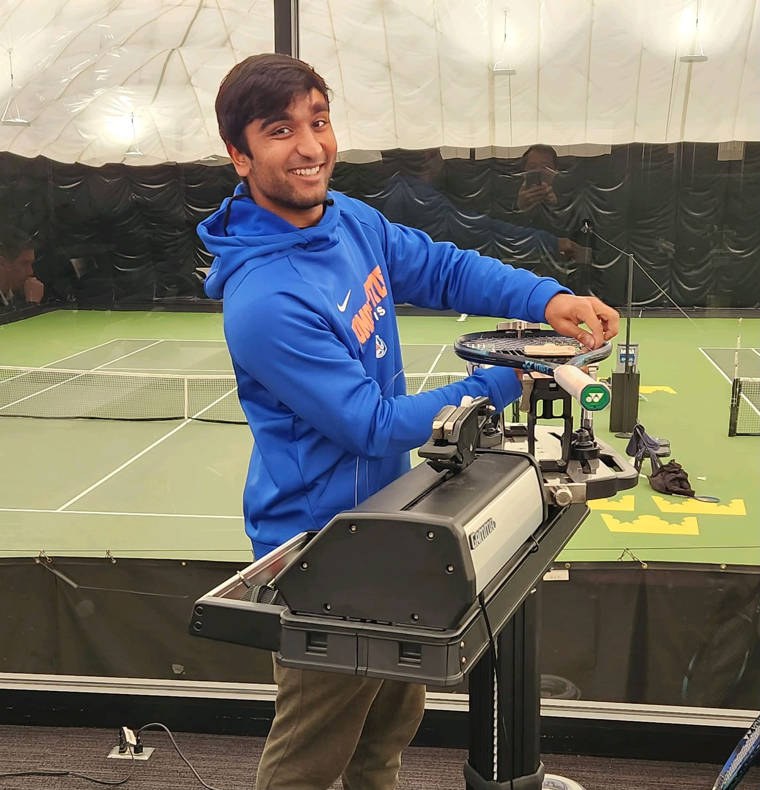
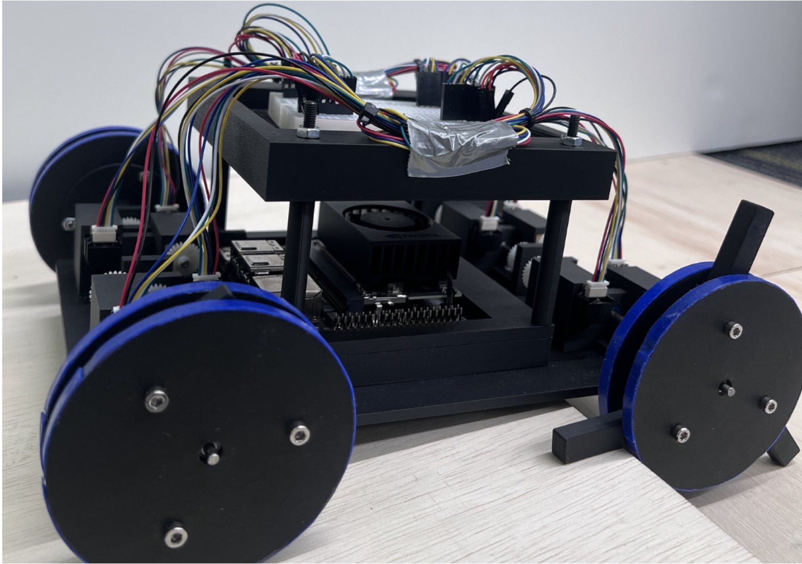
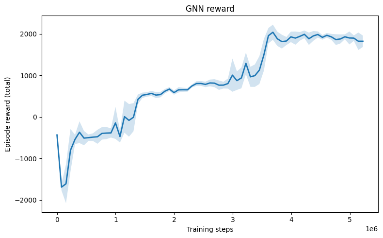
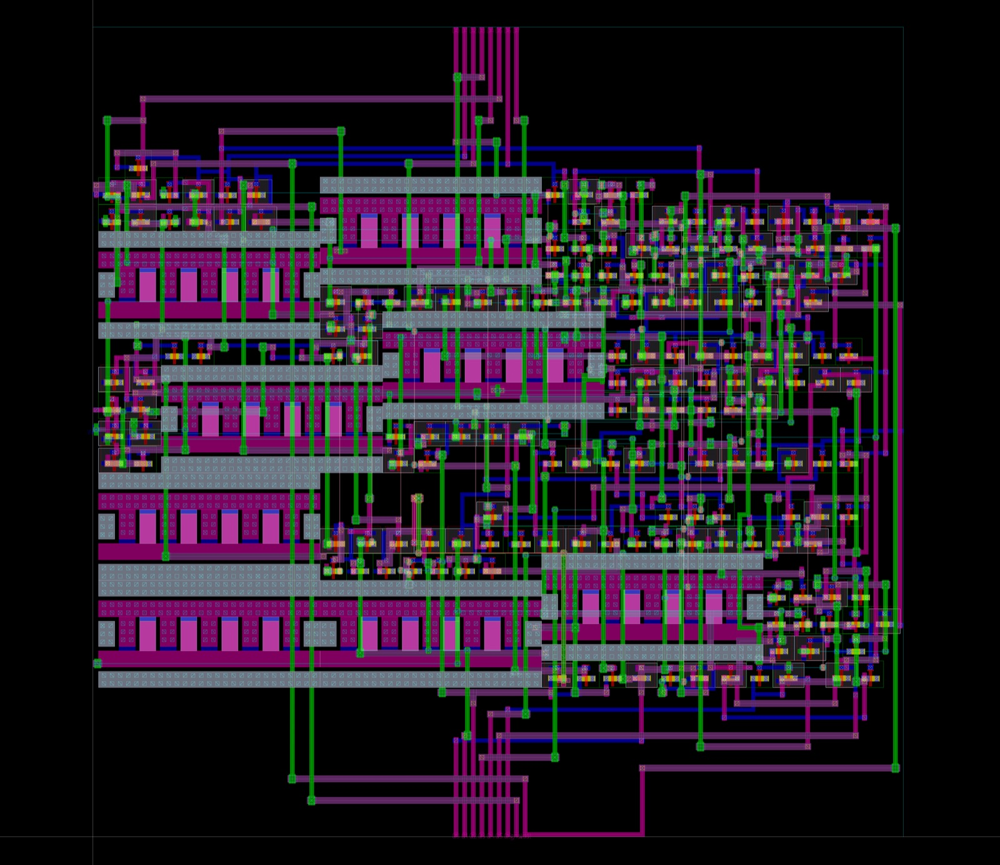
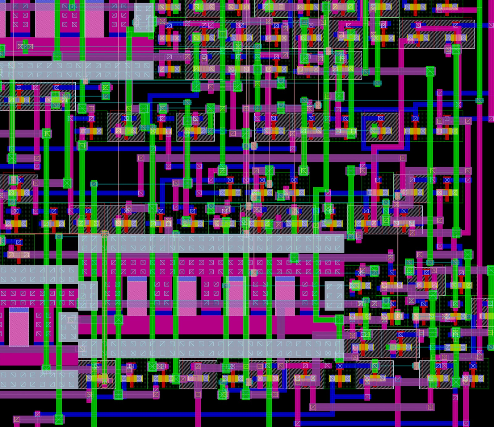
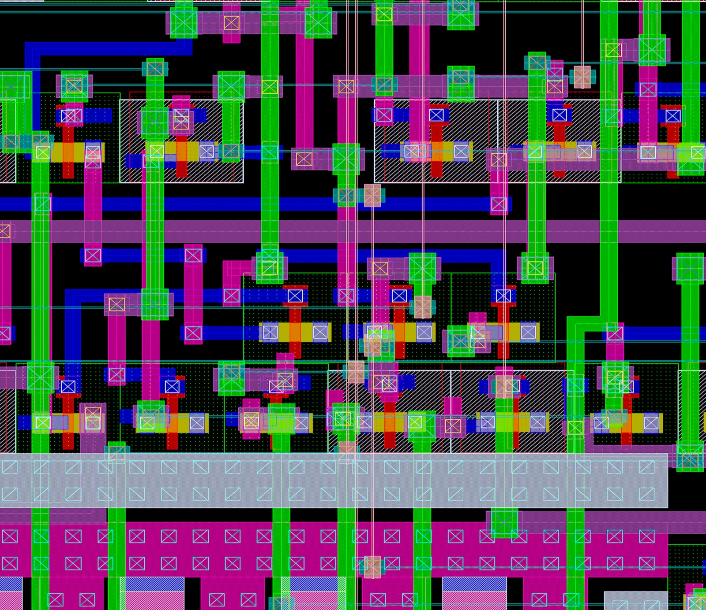
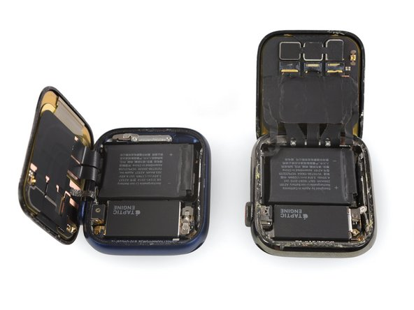
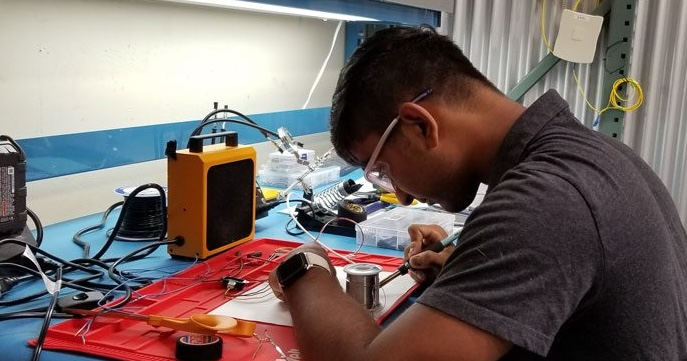

Systems engineer working where hardware, software, and intelligent machines meet.
Intro

I am a kernel architecture engineer at Apple and a recent Pomona College graduate. I like building across abstraction layers: operating-system infrastructure, secure embedded firmware, processor design, and reinforcement-learning controllers for unusual robots.
That curiosity started early. At seven, I picked up both my first tennis racket and Scratch program; years later it led me to captain Pomona-Pitzer men's tennis and build a programmable computer from 74LS logic on breadboards. This site is an attempt to keep track of what came next.
System-on-Chip Design, Microprocessor Systems, VLSI, Neuroscience and Optics Research
Mathematics
Number Theory and Cryptography, Abstract Algebra, Real Analysis, Probability, Computational Statistics, Mathematics of Big Data
Projects
ICRA 2026 · Vienna, Austria
Graph-Structured Reinforcement Learning for a Transformable-Wheel Robot

The physical transformable-wheel platform.

Evaluation reward during GNN policy training.
I built a custom MuJoCo/MJX reinforcement-learning environment for step traversal and compared a flat MLP policy with a graph-structured actor-critic. The graph models the robot as one body node and four repeated wheel-module nodes, using message passing to encode the platform's morphology and coordination constraints. In our experiments, that structure helped the controller escape early spinning and heaving failure modes faster.
I co-authored the resulting paper and presented the work at the Xplore workshop at ICRA 2026 in Vienna.
I co-authored a hands-on introduction to simulation for robotics research. The tutorial moves from simulator fundamentals and model building through visualization, scalable experiments, and training a reinforcement-learning agent.
To understand what happens below machine code, I built a fully programmable 8-bit computer based on the SAP-1 architecture - first on breadboards and later as a PCB - using 74LS logic gates.
VLSI Transistor-Level CPU



I designed this 8-bit register at the transistor level, specifying the silicon doping, device geometry, wiring, and transitions between metal layers. It was the next step down the abstraction stack after the breadboard computer.
NeoObscura is a custom camera sensor built from 1,200 phototransistors with hardware-accelerated image compression. A 32-bit Arm Cortex-M4 MCU and iCE40 FPGA work together to produce a 40-by-30-pixel image.
This SystemVerilog AES-128 accelerator uses a sequential architecture to fit within roughly 5,000 FPGA LUTs. It receives plaintext and a key from an MCU over SPI, then returns the ciphertext and a ready signal.
I explored conditioning mechanisms in latent-diffusion image generation and extended them into the audio domain, producing a model that generates images from human speech.
More
Two-time finalist and presenter in the CSAW Embedded Security Challenge (2024 and 2025)
School security prototype using Google's Teachable Machine and JavaScript
Music-reactive LED system using Raspberry Pi and Python
RFID door lock and iOS safety and public-health apps
Work
June 2026 - Present
Apple · Kernel Architecture Engineer
I work on the Core Drivers Architecture team, leading work on SystemExtensions - userspace drivers hosted within macOS applications - and developing critical software across kernel driver systems and bootloaders.
Summers 2023, 2024, and 2025
Apple · Battery Firmware Engineering Intern

I developed embedded firmware with Apple's Battery and Custom Silicon team, including secure update and secure bootloader work, I2C drivers, and RTOS features on Arm platforms. In 2024, I also worked with Platform Architecture Security to develop a framework for secure signing and attestation for emerging chips.
Fall 2025
Clay-Wolkin Fellow · Harvey Mudd College
I conducted applied VLSI and system-on-chip research on the open-source CORE-V Wally RISC-V processor. I also contributed to the RISC-V Instruction Set Architecture Manual, with an emphasis on hypervisor and cache extensions.
Johnson & Johnson Vision · Harvey Mudd Engineering Clinic
I created an ultra-high-speed camera and optical system for imaging cavitation bubbles generated by femtosecond-laser interactions with corneal tissue during LASIK eye surgery.
June 2021 - August 2022
Arcadia Tractor · Software & Hardware Engineer

I worked on an autonomous golf-driving-range ball picker, built a machine-learning model for golf-ball detection, and developed a CAN bus battery monitor alongside other embedded ROS work.
Summer 2020
Cisco Systems · Product Management Intern
I researched remote-work needs during the COVID-19 pandemic and prototyped a Raspberry Pi-based home telepresence concept.